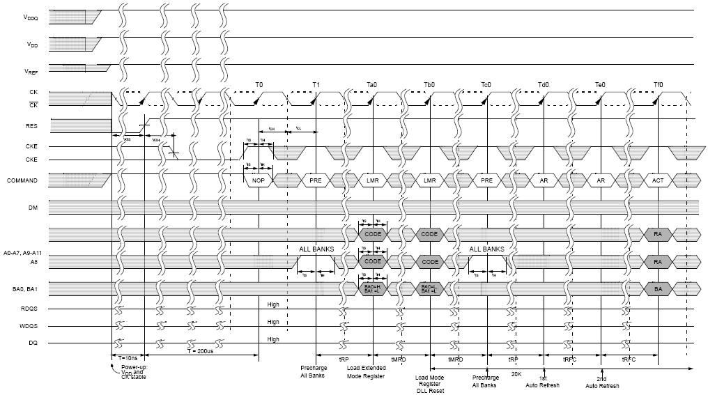
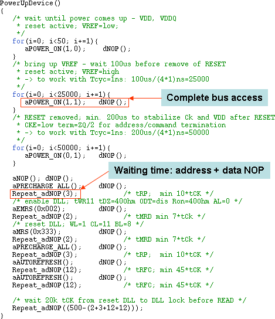
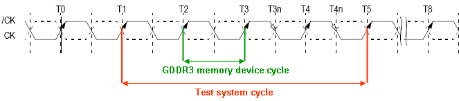

GDDR3 power-up sequence example
GDDR3 SDRAMs must be powered up and initialized in a pre defined manner (see following figure). Operational procedures other than those specified may result in undefined operation.

An MTL example of an GDDR3 initialization sequence is shown in the figure below.

In the GDDR3 initialization sequence MTL example shown in the figure above access to the different signals is split into:
- Address-based access
Identified by the character a at the beginning of the function name, for example
aWRITE(bank, column).Signals in the address group are: CMD, ADDRESS, BANK, CLK, RESET, VREF
- Data-based access
Identified by the character d at the beginning of the functions name, for example
dWRITE(data).Signals in the data group are: WDQS, DM, DQi, RDQS, DQo
Note Every test system cycle can be split up into several device accesses. In the example above an device access for all data pins and a separate access for all other pins is used.
Each function call in above sequence implements four GDDR3 memory device cycles. Using x8 mode with 50% duty cycle matches perfectly to one test system device cycles (see following figure).

For further information see
- GDDR3 MTL examples for the function calls used in the initialization sequence and
- GDDR3 specification for description of the dedicated bit-sequences used in the MTL access function calls.